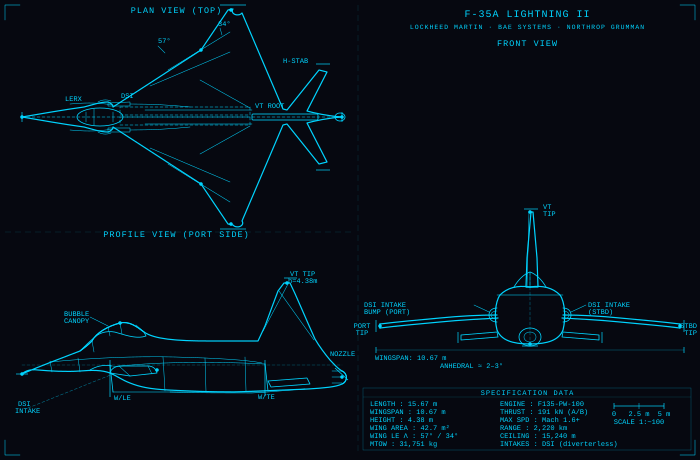
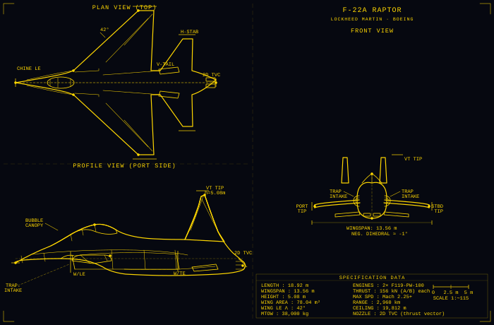
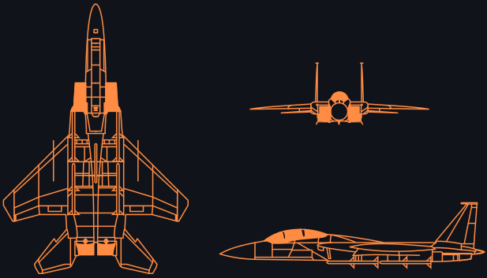
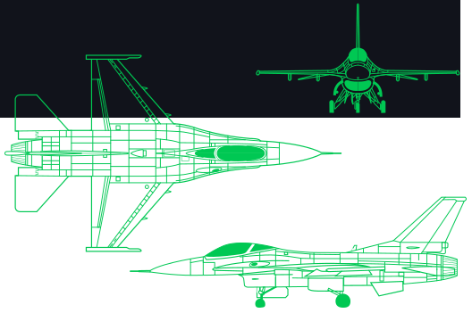
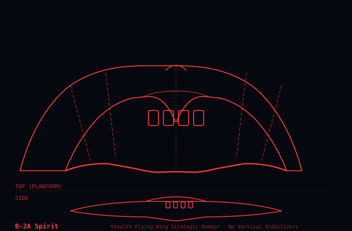
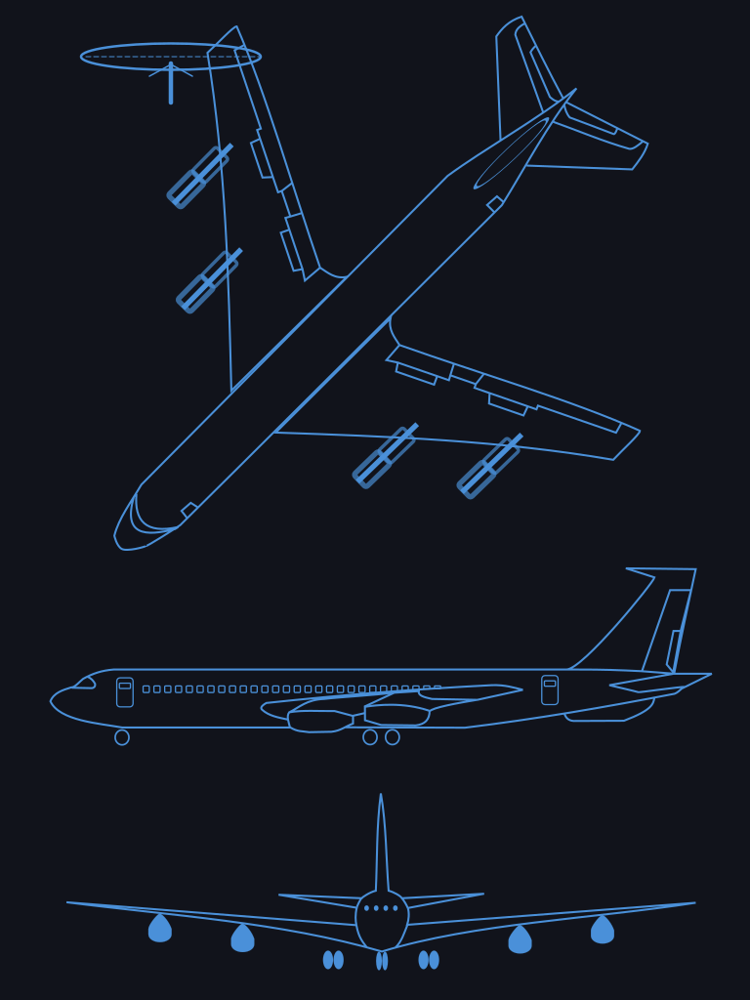

March 10, 2026 | Compiled from 40+ international sources | Last updated 02:44 UTC
LIVE
US BOMBERS: B-1, B-2 and B-52 bombers from RAF Fairford carried out pinpoint strikes on missile sites deep inside Iran (Defense News, Mar 9, 2026)OIL DISRUPTION: ~17 million barrels per day of exports disrupted as Strait of Hormuz effectively closed, hitting global markets (World Oil/S&P Global, Mar 9, 2026)US STAFF OUT: U.S. orders non-emergency government employees to leave Saudi Arabia amid widening risks (CNBC, Mar 9, 2026)IRAN CASUALTIES: Iran Deputy Health Minister reports 1,255 killed and 12,000 wounded in nine days of U.S.-Israeli attacks (Al Jazeera, Mar 9, 2026)IDF CLAIMS: IDF says more than 1,900 Iranian soldiers and commanders killed since onset of war (ynetnews, Mar 9, 2026)US STRIKES IRAQ: U.S. forces conduct strikes in Iraq against militias tied to Iran, widening the campaign (Wall Street Journal, Mar 9, 2026)US AIRBASE ACCESS: U.S. aircraft use UK airbases with British permission to support operations against Iran (Jerusalem Post/HuffPost, Mar 9, 2026)IRAN REJECTS CEASEFIRE: Tehran rejects ceasefire talks, vows to continue fighting (Politico/NBC, Mar 8-9, 2026)KURDISH NO-FLY ZONE: Kurdish opposition urges US-enforced no-fly zone to protect Kurdish areas (Politico, Mar 8, 2026)OIL PRICE SPIKE: Oil futures surge above $100–$110/bbl after Strait of Hormuz standstill; analysts warn stagflation risk (CNBC/Guardian/Bloomberg, Mar 8-9, 2026)SPECIAL OPS DISCUSSION: Bloomberg reports US considering special operation to seize Iran’s uranium/WMD sites (Bloomberg, Mar 8, 2026)IRAN ATTACKS: Iran launches missiles at Israel and Gulf states after Mojtaba Khamenei named supreme leader (Avery Journal-Times, Mar 9, 2026)U.S. POLICY: President Trump says deploying U.S. ground forces in Iran remains 'possible' / 'on the table' (Haaretz, Mar 8, 2026)DISPLACEMENT: More than 500,000 people registered as displaced in Lebanon after renewed Israel-Hezbollah fighting (Al Jazeera, Mar 8, 2026)CENTCOM WARNING: CENTCOM issues safety alerts accusing Iran of operating military assets from populated areas; urges civilians to take precautions (Ynetnews/CENTCOM, Mar 8, 2026)STRAIT OF HORMUZ: Shipping near standstill for seventh day; only Iran-linked vessels transiting (World Oil/Bloomberg, Mar 8, 2026)IRAN LEADERSHIP: Assembly of Experts names Mojtaba Khamenei new Supreme Leader; IRGC publicly backs accession (BBC/Reuters, Mar 8, 2026)U.S. CASUALTIES: CENTCOM reports 7th U.S. service member killed in the conflict (The Hill/CENTCOM, Mar 8-9, 2026)STRIKES: U.S. and Israeli strikes continue targeting oil depots, refineries and naval bases across Iran (Al Jazeera/New York Times, Mar 8, 2026)IDF OPERATIONS: IDF says it struck IRGC space command (Khayyam satellite control) and dozens of Tehran military sites (ynetnews, Mar 8, 2026)MARKETS: Brent crude and U.S. futures surge above $100/bbl as shipping shutdown and tanker rates spike (Bloomberg/Seatrade, Mar 8-9, 2026)UAE DEFENSE: UAE MoD says Iran launched more than 1,000 UAVs/missiles at UAE; most intercepted (Janes, Mar 3, 2026)IAEA: Agency cannot verify Iran suspended uranium enrichment; calls for full access for verification (IAEA/Times of Israel, Mar 2026)U.S. MILITARY: CENTCOM says Precision Strike Missile used in combat; over 20 Iranian navy vessels struck or sunk (FlightGlobal/Jerusalem Post/CENTCOM, Mar 2026)U.S. MILITARY: Two aircraft carriers including USS Abraham Lincoln deployed to region with 90+ strike fighters (FlightGlobal, Mar 2-4, 2026)US BOMBERS: B-1, B-2 and B-52 bombers from RAF Fairford carried out pinpoint strikes on missile sites deep inside Iran (Defense News, Mar 9, 2026)OIL DISRUPTION: ~17 million barrels per day of exports disrupted as Strait of Hormuz effectively closed, hitting global markets (World Oil/S&P Global, Mar 9, 2026)US STAFF OUT: U.S. orders non-emergency government employees to leave Saudi Arabia amid widening risks (CNBC, Mar 9, 2026)IRAN CASUALTIES: Iran Deputy Health Minister reports 1,255 killed and 12,000 wounded in nine days of U.S.-Israeli attacks (Al Jazeera, Mar 9, 2026)IDF CLAIMS: IDF says more than 1,900 Iranian soldiers and commanders killed since onset of war (ynetnews, Mar 9, 2026)US STRIKES IRAQ: U.S. forces conduct strikes in Iraq against militias tied to Iran, widening the campaign (Wall Street Journal, Mar 9, 2026)US AIRBASE ACCESS: U.S. aircraft use UK airbases with British permission to support operations against Iran (Jerusalem Post/HuffPost, Mar 9, 2026)IRAN REJECTS CEASEFIRE: Tehran rejects ceasefire talks, vows to continue fighting (Politico/NBC, Mar 8-9, 2026)KURDISH NO-FLY ZONE: Kurdish opposition urges US-enforced no-fly zone to protect Kurdish areas (Politico, Mar 8, 2026)OIL PRICE SPIKE: Oil futures surge above $100–$110/bbl after Strait of Hormuz standstill; analysts warn stagflation risk (CNBC/Guardian/Bloomberg, Mar 8-9, 2026)SPECIAL OPS DISCUSSION: Bloomberg reports US considering special operation to seize Iran’s uranium/WMD sites (Bloomberg, Mar 8, 2026)IRAN ATTACKS: Iran launches missiles at Israel and Gulf states after Mojtaba Khamenei named supreme leader (Avery Journal-Times, Mar 9, 2026)U.S. POLICY: President Trump says deploying U.S. ground forces in Iran remains 'possible' / 'on the table' (Haaretz, Mar 8, 2026)DISPLACEMENT: More than 500,000 people registered as displaced in Lebanon after renewed Israel-Hezbollah fighting (Al Jazeera, Mar 8, 2026)CENTCOM WARNING: CENTCOM issues safety alerts accusing Iran of operating military assets from populated areas; urges civilians to take precautions (Ynetnews/CENTCOM, Mar 8, 2026)STRAIT OF HORMUZ: Shipping near standstill for seventh day; only Iran-linked vessels transiting (World Oil/Bloomberg, Mar 8, 2026)IRAN LEADERSHIP: Assembly of Experts names Mojtaba Khamenei new Supreme Leader; IRGC publicly backs accession (BBC/Reuters, Mar 8, 2026)U.S. CASUALTIES: CENTCOM reports 7th U.S. service member killed in the conflict (The Hill/CENTCOM, Mar 8-9, 2026)STRIKES: U.S. and Israeli strikes continue targeting oil depots, refineries and naval bases across Iran (Al Jazeera/New York Times, Mar 8, 2026)IDF OPERATIONS: IDF says it struck IRGC space command (Khayyam satellite control) and dozens of Tehran military sites (ynetnews, Mar 8, 2026)MARKETS: Brent crude and U.S. futures surge above $100/bbl as shipping shutdown and tanker rates spike (Bloomberg/Seatrade, Mar 8-9, 2026)UAE DEFENSE: UAE MoD says Iran launched more than 1,000 UAVs/missiles at UAE; most intercepted (Janes, Mar 3, 2026)IAEA: Agency cannot verify Iran suspended uranium enrichment; calls for full access for verification (IAEA/Times of Israel, Mar 2026)U.S. MILITARY: CENTCOM says Precision Strike Missile used in combat; over 20 Iranian navy vessels struck or sunk (FlightGlobal/Jerusalem Post/CENTCOM, Mar 2026)U.S. MILITARY: Two aircraft carriers including USS Abraham Lincoln deployed to region with 90+ strike fighters (FlightGlobal, Mar 2-4, 2026)TURKEY: Iranian missile strikes hit Turkish territory (Mar 4, 2026) — NATO Article 4 consultations triggered; İncirlik Air Base on heightened alert; Erdoğan condemns attack
🌎
Theater Force Postures — All Nations
Current military stance of every nation directly involved in or affected by Operation Epic Fury — March 5, 2026 • NEW (Mar 4): Turkey struck by Iranian missiles • NEW (Mar 5): Oman hit; Hezbollah attempts second front
Coordinated with CENTCOM throughout; struck Khamenei command bunker, IRGC HQ, nuclear sites; all air-defense layers active against Iranian missile salvo
🇦🇮 Saudi Arabia (RSAF)► NEW (Mar 3)
RSAF: F-15SA Strike Eagle, Typhoon; Patriot PAC-3 batteries; Prince Sultan Air Base (F-15SAs, E-3 AWACS, KC-135 tankers)
ACTIVE STRIKES
Declared active co-belligerent (Mar 3) following Iran's missile strikes on Saudi soil and drone attack on U.S. embassy in Riyadh; RSAF F-15SA and Typhoon strike packages joining US-led operations against Iranian targets; Prince Sultan Air Base now serves as a direct strike launch platform
🇶🇦 Qatar (QEF)► NEW (Mar 3)
QEF: Rafale, Typhoon; Al Udeid Air Base (CENTCOM Forward HQ, ~10,000 US troops); THAAD battery; Patriot PAC-3
ACTIVE STRIKES
Formally joined coalition (Mar 3) following Iran's direct strike on Al Udeid Air Base; QEF Rafales and Typhoons participating in strike missions from Al Udeid; Qatar upgraded from host nation to active co-belligerent
🟡 Coalition Support / Host Nations Under Attack
Nation
Key Assets in Theater
Posture
Notable Action
🇬🇧 United Kingdom
HMS Diamond (Type 45 AAW destroyer); Typhoon FGR.4s (RAF Akrotiri, Cyprus); F-35Bs (Cyprus detachment); Sky Sabre CAMM ground-based air defense
Defensive assistance
BLOCKED US offensive use of Diego Garcia — B-2 / GBU-57 MOP mission denied; defensive assets offered to Gulf allies; HMS Diamond active in Red Sea corridor
🇫🇷 France
FS Charles de Gaulle (R91) carrier group — Rafale M fighters, E-2C Hawkeye; frigates Forbin (D620), Provence (D652), Alsace (D656); Rubis-class SSN; ~3,000 naval personnel
Deploying
Charles de Gaulle transiting Eastern Mediterranean (Mar 1) — humanitarian protection & maritime security mandate; not participating in strikes
🇩🇪 Germany
Patriot PAC-3 batteries (offered); Eurofighter Typhoons (offered); no assets currently in theater
Defensive assistance
Patriot batteries and Typhoons offered to Gulf allies; Bundestag emergency session authorized additional defense cooperation; not participating in strikes
🇦🇪 UAE
Al Dhafra Air Base (F-22A, MQ-9 Reaper); THAAD battery; Patriot PAC-3; UAEAF: Rafale, F-16E/F Block 60 Desert Falcon
Under attack
Iranian ballistic missiles struck Abu Dhabi — 1 killed, multiple injured; Abu Dhabi International Airport temporarily closed; THAAD and Patriot activated; national security council convened; Iran ambassador summoned
🇧🇭 Bahrain
NSA Bahrain — US 5th Fleet HQ; NAVCENT command; Patriot PAC-3 batteries; ~7,000 US personnel
Under attack — base hit
US 5th Fleet HQ struck by Iranian ballistic missiles — Bahrain confirmed the hit; casualties and damage extent not confirmed; condemned as "flagrant attack on Bahraini sovereignty"
🇰🇼 Kuwait
Ali Al Salem Air Base (US F/A-18, A-10 units); Camp Arifjan; ~13,500 US personnel; Patriot PAC-3
Force Protection Delta
Highest threat alert (FPCON Delta) declared; missile alerts issued; commercial airspace temporarily closed; no confirmed impacts; urged "maximum restraint from all parties"
🇯🇴 Jordan
Muwaffaq Salti Air Base — 18×F-15E, 18×F-35A, 12×F-16C, 6×EA-18G Growler, 2×MQ-9; RJAF F-16AM/BM; Patriot PAC-3
Elevated
Hosts major US strike assets at Muwaffaq Salti but DENIED Jordan airspace for offensive strikes into Iran; air defense alert status elevated
🇹🇷 Turkey► NEW (Mar 4)
NATO 2nd-largest military; İncirlik Air Base (US nuclear warheads, B61 gravity bombs); F-16C/D, F-4E-2020; Patriot (German-operated on Turkish soil); S-400 (Russian, inactive)
Under attack
Iranian missile strike hit Turkish territory (Mar 4) — NATO Article 4 consultations triggered; Erdoğan condemned attack; İncirlik Air Base on heightened alert; Turkey reserves right of self-defense; previously serving as back-channel mediator
🇴🇲 Oman► NEW (Mar 5)
Muscat back-channel diplomatic role; RAFO: F-16C/D; US access rights (limited); strategic position astride Gulf of Oman exit; Patriot PAC-3 (limited)
Under attack
Iranian missile/drone strike hit Omani territory (Mar 5) — Muscat International Airport area targeted; Sultan Haitham condemned the attack; Oman suspended its back-channel mediator role; air defense systems activated; casualties and damage under assessment; previously served as sole remaining US–Iran diplomatic channel
🔴 Adversary / Iran Axis — Active & Proxy Forces
Nation / Actor
Key Assets
Posture
Current Status
🇮🇷 Iran (IRGC / IRIAF)
Est. 1,000–1,300 ballistic missiles remaining; ~150–180 mobile TEL launchers; Shahed-136/238 drone fleet; IRGC Navy fast-attack boats, Noor/Qader/Khalij Fars anti-ship missiles; Bavar-373 SAM; APT33/APT34 cyber units
RETALIATING
~170 ballistic missiles fired Feb 28 (first salvo); Supreme Leader Khamenei confirmed dead Mar 1; command vacuum — second-wave authority unclear; internet & comms severely disrupted; IRGC Navy & IRIN declared destroyed by CENTCOM (Mar 3) — most surface combatants sunk or disabled
🇵🇸 Yemen (Houthis / Ansar Allah)
Ballistic missiles (Burkan-3, Badr-F); Shahed-type loitering drones; Noor anti-ship missiles; coastal defense batteries; Red Sea interdiction capability
Proxy — activating
Concurrent ballistic-missile and drone attacks on Saudi oil infrastructure and Red Sea shipping reported (Feb 28–Mar 1); operating under IRGC Quds Force pre-standing orders; confirmation of specific attacks unverified independently
Hezbollah attempted to open second front (Mar 5) — launched rocket barrages toward northern Israel; IDF Iron Dome and David's Sling activated; Israel struck Hezbollah launch sites in southern Lebanon in response; activation attempt partially disrupted by IDF preemptive strikes on launcher positions; Quds Force disruption has degraded centralized coordination but Hezbollah acting on pre-standing orders independently
🇮🇶 Iraq (Iran-aligned PMF)
Popular Mobilization Forces: Kataib Hezbollah, Harakat al-Nujaba, Asaib Ahl al-Haq; ballistic missiles; drones; rocket artillery; presence at bases near US assets
Proxy — alert
PMF factions declared support for Iran; threat to US bases in Iraq elevated; Iraqi government formally protested US strikes; Iraqi PMF activation of pre-standing orders possible without Quds Force coordination
⚪ Strategic Opposition / Geopolitical Actors
Nation
Military Capability
Posture
Current Action
🇷🇺 Russia
No assets in direct theater; Black Sea Fleet; Mediterranean naval task group; Wagner-successor forces in Syria
Condemnation — no direct action
Condemned strikes as "gross violation of international law"; called UN Security Council emergency session; co-vetoed ceasefire resolution with China; warned of "unpredictable global consequences"; monitoring but not intervening militarily
🇨🇳 China
No assets in theater; confirmed supplying Iran with anti-ship missiles (Feb 24); PLAN forces in Indian Ocean
Supplying Iran — no direct action
Condemned strikes; called for "immediate cessation of military activities"; Feb 24 anti-ship missile supply agreement confirmed days before Operation Epic Fury; co-vetoed UN ceasefire resolution; whether shipments continue into active conflict is a critical open question
✈
Air Power: The Arsenal
160+ aircraft surged to the region — 24 F-22 Raptors now based at Ovda Air Base, Israel — U.S. B-1B and B-52H bombers forward-deployed to RAF Fairford under UK authorization — largest aerial deployment since 2003; further fighters/bombers inbound (Defense News & Military Times, Mar 9)
Bomber Task Force forward-deploys to RAF Fairford (Mar 9–10)
B-1B Lancers arrived at RAF Fairford, with B-52H Stratofortress aircraft joining to support Operation Epic Fury. The UK MoD confirmed U.S. use of Fairford for "specific defensive operations to prevent Iran firing missiles into the region". CENTCOM-released footage and briefings highlighted precision bomber strikes on Iranian missile infrastructure in the opening phase. — Sources: Defense News, Mar 9; Military Times, Mar 9; Defense News Weekly, Mar 10
Air Surge Expands
U.S. commanders say additional fighters and bombers are being surged to sustain operations over Iran, including the capital region; timelines remain conditions-based. — Source: Air & Space Forces Magazine, Mar 9

F-35A Lightning II
5th Gen Stealth Multi-Role
Mach 1.6 • 1,200nm range • Internal weapons bay GPS-guided bombs, AIM-120 AMRAAM Primary strike platform for hardened targets

F-22A Raptor
5th Gen Air Superiority
Mach 2.25 • Supercruise capable • Thrust vectoring AIM-120D, AIM-9X, JDAM Ensures air dominance over any contested airspace

F-15E Strike Eagle
Deep Strike / Interdiction
Mach 2.5 • 2,400nm ferry range • 23,000 lb payload GBU-28 bunker busters, JASSM-ER cruise missiles Key platform for deep underground facility strikes

F-16C/D Fighting Falcon
Multi-Role Fighter
Mach 2.0 • 9g capable • HARM anti-radar missiles SEAD/DEAD suppression of enemy air defenses Essential for neutralizing Iranian SAM networks

B-2 Spirit
Stealth Strategic Bomber
6,000nm range • 40,000 lb payload • Near-invisible GBU-57 MOP (30,000 lb bunker buster) Only platform that can penetrate deepest Iranian bunkers

E-3 Sentry AWACS
Airborne Command & Control
360° radar coverage • 250nm detection range Coordinates all air operations in theater The "eye in the sky" — directs the entire air campaign
Air Power Surge — Aircraft Deployed to Middle East (Feb 2026)
F-35 Lightning II
Stealth Strike
F-22 Raptor
Air Superiority
F-15E Strike Eagle
Deep Strike
F-16 Falcon
SEAD / Multi-Role
E-3 AWACS
C2 / ISR
KC-135/46 Tankers
85+ tankers
C-17/C-5 Cargo
170+ sorties
Total: 150+ combat & support aircraft surged in the past week — Source: Washington Post
⚓
Naval Strike Power
25+ US warships deployed — 43 Iranian warships destroyed (CENTCOM, Mar 7) — Hormuz functionally closed — Ford operating in Red Sea (USNI, Mar 6) — Historic oil disruption from Hormuz shutdown (CNBC, Mar 9)
Historic Oil Disruption as Hormuz Stays Shut (Mar 9–10)
Energy analysts assess the Strait of Hormuz closure has triggered the biggest oil supply disruption in history. S&P Global estimates roughly 17 million barrels/day of supply is offline; only 35 transits in four days were recorded last week as operators divert via the Cape of Good Hope. Insurers also cite catastrophic spill risk as a key reason to avoid Hormuz for now. — Sources: CNBC, Mar 9; World Oil (S&P Global), Mar 9; Marine News Magazine/Windward, Mar 6; CNBC, Mar 9
USS Gerald R. Ford Enters the Red Sea; Two CSGs On-Station (Mar 6)
U.S. Navy released images of USS Gerald R. Ford (CVN-78) transiting the Suez Canal on Mar 5; the carrier is now operating in the Red Sea under U.S. Central Command. USS Abraham Lincoln (CVN-72) remains in the Arabian Sea. USS George H.W. Bush (CVN-77) completed COMPTUEX on Mar 6 and is certified for national tasking ahead of deployment. — Sources: USNI News, Mar 6; USNI Fleet & Marine Tracker, Mar 2
Iran declared the Strait of Hormuz closed and vowed to fire on any ship attempting passage. An IRGC-identified tanker Athe Nova burned after a drone strike, and at least eight vessels have been hit amid the crisis. A U.S. submarine strike sank an Iranian warship off Sri Lanka, worsening the shipping paralysis; Sri Lanka later interned an Iranian naval vessel that sought refuge. — Sources: Reuters, Mar 2 & Mar 4; USNI News, Mar 5
U.S. and Israeli forces initiated coordinated strikes on Iran. U.S. Navy surface combatants and a guided-missile submarine supported the opening phase with Tomahawk land-attack cruise missiles, while USS Abraham Lincoln operated in the Arabian Sea and USS Gerald R. Ford repositioned east in the Mediterranean. The Pentagon confirmed USS George H.W. Bush (CVN-77) has been ordered to deploy to reinforce the posture. — Source: Reuters, Feb 28–Mar 1; Military.com, Feb 28; PBS NewsHour, Feb 28
CENTCOM released its operational summary: coalition forces have struck over 3,000 targets inside Iran and destroyed 43 Iranian warships since Operation Epic Fury began. Iran's navy is now operationally irrelevant. The IRGC has shifted to asymmetric maritime attacks — drone strikes on tankers Prima and Louise P in the Strait of Hormuz. Only 4 commercial transits were confirmed in 24 hours. — Sources: CENTCOM, AP, Reuters, Euronews, Mar 7
ARABIAN SEA
Carrier Strike Group
USS Abraham Lincoln
CVN-72 • Nimitz-class
~80
Aircraft
5,600
Crew
📍 Arabian Sea — conducting strike and sortie operations as part of the regional surge (Mar 9, 2026)
Air Wing
F-35C Lightning IIF/A-18E/F Super HornetsEA-18G GrowlersE-2D HawkeyeMH-60 Seahawk
RED SEA
Carrier Strike Group
USS Gerald R. Ford
CVN-78 • Ford-class
~75
Aircraft
4,500
Crew
📍 Red Sea — entered via Suez (Mar 5) and now operating under CENTCOM tasking alongside Lincoln (Mar 9, 2026)
DDG-121 Petersen • DDG-111 Spruance • DDG-112 Michael Murphy • DDG-81 Churchill • DDG-96 Bainbridge • DDG-72 Mahan • DDG-74 McFaul • DDG-57 Mitscher • DDG-91 Pinckney • DDG-113 John Finn • DDG-80 Roosevelt • DDG-84 Bulkeley • DDG-119 Black
+ 3 LCS (Gulf) • SSGN-729 Georgia (submarine) • CVN-77 Bush DEPLOYMENT CONFIRMED (Feb 27) — COMPTUEX complete (Mar 6), en route Atlantic → Mediterranean → Middle East
25+ SHIPS • >1/3 OF US FLEET • 3 CARRIERS ORDERED
CSIS Assessment: Largest Naval Force Since Iraqi Freedom 2003
CSIS analysts describe this as "the largest naval force in the region since five carrier battle groups assembled at the outset of Operation Iraqi Freedom in 2003." The fleet's combined Tomahawk-equipped surface ships could unleash 600+ land-attack cruise missiles in a single salvo (OSINT analyst Ian Ellis). However, CSIS notes the force lacks Marines, special operations forces, and logistics for an extended air campaign — it is sized for punitive strikes, not regime change. Ford's deployment was extended a second time; the carrier was previously involved in the Venezuela mission that captured Nicolas Maduro before being redirected to the Middle East. — Sources: CSIS Feb 24, Gulf News, Stars & Stripes, The War Zone
PM Starmer approved British base use for limited strikes on Iran's missile capabilities (Mar 7), reversing earlier defensive-only posture; RAF Fairford now hosting U.S. B-1B and B-52H bombers for specific defensive operations to prevent Iranian missile launches (Mar 9). HMS Dragon (D35) and Wildcats deploying to Eastern Med to bolster air defense (Mar 3). — Sources: USNI News, Mar 3; Defense News, Mar 9; Military Times, Mar 9
RSAF: F-15SA Strike Eagle, Typhoon; Patriot PAC-3 batteries; Prince Sultan Air Base (strike launch platform)
ACTIVE STRIKES
Active co-belligerent (Mar 3) — RSAF F-15SA and Typhoon strike packages targeting Iranian targets following Iran's missile strikes on Saudi soil and drone attack on U.S. embassy in Riyadh. U.S. orders non‑emergency government staff to depart Saudi Arabia amid heightened risk (Mar 9). — Source: CNBC, Mar 9
Jordan
Muwaffaq Salti Air Base (18×F-15E, 18×F-35A, 12×F-16, 6×EA-18G, 2×MQ-9)
Elevated
Hosts US assets but DENIED airspace for strikes
Turkey 🇹🇷► UPDATED
NATO 2nd largest military; İncirlik Air Base; F-16C/D; Patriot (German-operated)
Under attack
Iranian missile strike on Turkish territory (Mar 4); NATO intercepted an Iranian ballistic missile over Turkey (Mar 9); Ankara says it won't allow its airspace to be used for strikes against Iran (Mar 9). NATO Article 4 consultations triggered; İncirlik on heightened alert. — Sources: Ynetnews, Mar 9 (Tier‑4); Axios, Mar 9
China
Anti-ship missiles (reported)
Supplying Iran
Confirmed Feb 25
🏆
Iran's Remaining Military Capability
Post-Operation Epic Fury: degraded, decapitated — but not disarmed
🔴 Operation "Epic Fury" — Day 11 (March 10, 2026)
Overnight into Tuesday, Israel conducted another wide-scale wave of strikes on sites in Tehran, Isfahan, and southern Iran, while Iran launched fresh missile and drone barrages at Israel and multiple Gulf states. NATO assets reportedly intercepted an Iranian ballistic missile over Turkey. The U.S. has forward-deployed B-1B bombers to RAF Fairford to sustain deep-strike capacity, and has ordered non‑emergency staff to depart Saudi Arabia amid elevated risk. Maritime traffic through the Strait of Hormuz remains severely suppressed as analysts estimate a disruption of roughly 17 million bpd of oil supply. President Trump reiterated he is “nowhere near” deciding on sending troops to secure Iranian nuclear stocks. — Sources: BBC, Mar 10, 2026 (tier 4); CNN live updates, Mar 10, 2026 (tier 4); Ynet, Mar 10, 2026 (tier 4 — not yet wire‑confirmed); Defense News, Mar 9, 2026 (tier 3); CNBC, Mar 9, 2026 (tier 4); World Oil citing S&P Global, Mar 9, 2026 (tier 2); Reuters, Mar 9, 2026 (tier 2)
Hormuz Maritime Freeze — Week 2
The Strait of Hormuz is effectively frozen for most commercial traffic, with operators and insurers avoiding transit amid mine/ASCM/UAV risks and pollution‑liability concerns. Analysts estimate ~17 million bpd in disrupted supply; diversions around the Cape are surging and LPG exports are sliding. — Sources: World Oil citing S&P Global, Mar 9, 2026 (tier 2); CNBC, Mar 9, 2026 (tier 4); Marine News Magazine (Windward), Mar 6, 2026 (tier 4)
🆕 Admiral Cooper CENTCOM Video Briefing — Day 5 Operational Update (Mar 4, 2026)
CENTCOM Commander Admiral Brad Cooper reported nearly 2,000 Iranian targets struck since operations began; Iranian air defenses severely degraded; and a large-scale maritime suppression campaign underway. Cooper compared the opening wave to "Shock and Awe" in 2003, noting it was nearly double the scale. He added: "Our combat power is building. Iran's is declining... we are ahead of our game plan." — Source: Admiral Brad Cooper, CENTCOM video statement / ABC News, Mar 4, 2026
Air Campaign “Munitions Transition”
U.S. forces are shifting from expensive long-range standoff weapons (e.g., Tomahawk) to stand‑in JDAM/JSOW precision strikes as air superiority expands over key corridors. B‑1B Lancers and B‑52H are flying long‑range sorties, with B‑1Bs now forward at RAF Fairford (U.K.) to sustain tempo; HIMARS/ATACMS and first‑in‑combat PrSM have supplemented fires. As of Mar 4, Cooper reported Iran launched ~500 ballistic missiles and ~2,000 drones, imposing high interceptor costs but with declining effectiveness under sustained suppression. — Sources: Defense News, Mar 9, 2026 (tier 3); Military Times, Mar 9, 2026 (tier 4); CSIS analysis of Epic Fury, Mar 5–6, 2026 (tier 3); Air & Space Forces Magazine, Mar 9, 2026 (tier 3)
Interceptor Burn Rate & Air Defense Posture
Interceptor costs are mounting across the theater as Gulf and Israeli defenses counter ballistic missiles and massed Shahed drones. CSIS estimates ~$1.7B in air-defense interceptor expenditures by roughly H+100 hours, while the coalition increasingly shifts to air‑to‑air and gun/C‑UAS solutions as air superiority expands. — Source: CSIS “$3.7 Billion: Estimated Cost of Epic Fury’s First 100 Hours,” Mar 5, 2026 (tier 3)
🔎 Post-Strike Battle Damage Assessment (BDA) — Updated Mar 10
The following reflects confirmed and reported strike effects through Day 11 (Mar 10). BDA in active strike environments is inherently uncertain; figures below reflect authoritative open-source and commander public statements.
Confirmed / Reported Struck
IRGC Command-and-Control Nodes: Multiple C2 facilities struck early to degrade Iran’s ability to coordinate reprisal strikes; several senior IRGC officials reported killed. — PBS NewsHour, Feb 28
Nuclear Sites — Natanz & Isfahan: Strikes extended June 2025 damage; centrifuge infrastructure further degraded. Fordow neutralization remains unconfirmed (see below). — El País, Jun 19, 2025; Military Times, Jun 22, 2025; Reuters, Mar 1, 2026
Parchin Military Complex: Targeted on March 1; soil-covered concrete hardening observed Feb 20 was intended to blunt bunker-busters. — The War Zone, Feb 20, 2026; Reuters, Mar 1, 2026
Ballistic Missile Infrastructure: TEL convoys and mountain tunnel access points targeted. Updated: IDF now assesses ~100–200 launchers remain, down sharply after the opening waves. — ISW/Critical Threats Evening Special Report, Mar 6, 2026 (tier 3)
Air Defense Networks: S-300/Bavar-373 nodes struck; central coverage severely degraded enabling stand-in strikes. — CENTCOM / Cooper briefing, Mar 4, 2026
Tehran — IRGC HQ/Ministries Cluster: Multiple strikes and explosions; significant structural damage to IRGC admin, intel, and command facilities with collateral damage to nearby civilian structures documented in OSINT. — Reuters, Feb 28–Mar 1, 2026; BBC analysis via Haaretz, Mar 8, 2026 (tier 4)
Collateral Damage (Verified):Gandhi Hospital and Golestan Palace in Tehran sustained damage from strikes on nearby government targets, per BBC verification of satellite imagery and videos. — BBC via Haaretz, Mar 8, 2026 (tier 4)
IRIAF Airfields & Aircraft: Runways/HASs hit; F-4 and Su-22 airframes destroyed; manned air force largely grounded; drone depots struck. IDF also reported destroying transport aircraft used to supply proxies. — Army Recognition, Mar 1, 2026 (tier 4); AeroTime (tier 4); ISW Iran Update, Mar 2, 2026 (tier 3); Ynet, Mar 9–10, 2026 (tier 4)
Maritime — IRGC/IRIN Fleet Nodes and Vessels:Over 30 Iranian naval vessels destroyed since Feb 28, including the IRGCN Shahid Bagheri drone carrier (Mar 5); additional named losses include IRIS Dena and IRIS Shahid Sayyad Shirazi struck on Mar 3. Key Bandar Abbas/Chabahar facilities hit. — ISW/Critical Threats Evening Special Report, Mar 6, 2026 (tier 3)
Energy/Fuel Infrastructure: Israeli and U.S. strikes hit oil storage depots and fuel sites around Tehran; an Iranian official said five oil sites were damaged; U.S. officials were reportedly surprised by the scope of Israeli oil‑depot strikes. — The New York Times, Mar 8, 2026 (tier 4); The Guardian live, Mar 8–9, 2026 (tier 4); Jerusalem Post, Mar 9, 2026 (tier 5 — framing noted)
Long‑Range Missile Ecosystem: Israel reported strikes on long‑range launch sites and rocket‑engine production facilities in Iran. — Ynet, Mar 10, 2026 (tier 4 — not yet wire‑confirmed)
ISR/Space Enablers (Tehran): IDF reported strikes on the IRGC space & satellite HQ and the Khayyam satellite control center. — Ynet, Mar 8, 2026 (tier 4, not yet wire-confirmed)
Leadership Status — Confirmed / Reported
Supreme Leader Ali Khamenei — DEAD: Iranian state media confirmed his death March 1. — AP, WSJ, NBC citing Fars, Mar 1, 2026
Succession — Mojtaba Khamenei Elevated: The Assembly of Experts named Mojtaba Khamenei as Supreme Leader amid ongoing strikes. Consolidation of authority over strategic forces is ongoing. — Reuters, Mar 8, 2026 (tier 2); BBC profile, Mar 8, 2026 (tier 2)
IRGC Senior Commanders: Multiple generals/deputies reported killed; overall IRGC KIA described as "hundreds" by officials; no definitive CENTCOM tally. — CENTCOM/Cooper, Mar 4, 2026; ISW; Long War Journal
Quds Force Liaisons: Targeted in Beirut strike; five senior officials killed, per IDF. — Jerusalem Post, Mar 8, 2026 (tier 5 — framing noted)
Not Yet Confirmed Destroyed
Fordow Deep Bunker: Built under 80–90 m of mountain rock near Qom. The GBU-57 MOP penetrates ~61 m earth / 18 m reinforced concrete; complete neutralization of the deepest halls remains unconfirmed. — Gulf News; Israel Hayom, Jun 22, 2025; Ynetnews; El País; Military Times; FAS MOP analysis
Dispersed Mobile TELs: Survivors continue to relocate within mountain tunnel networks; now assessed at ~100–200 remaining but hard to find/fix/finish. — ISW/Critical Threats Evening Special Report, Mar 6, 2026 (tier 3)
Shahed Drone Stockpiles: Claims of up to ~80,000 Shahed-class units and ~400/day production persist; multiple depots struck but bulk stockpile likely intact. ⚠ Estimates skew to Israeli intel and remain debated. — Defence Security Asia; The Asia Live, Feb 2, 2026; Carnegie; Bloomberg, Mar 3, 2026; ISW
"Pickaxe Mountain" Facility (UNCONFIRMED): Alleged deep centrifuge complex near Isfahan, reportedly with Chinese tunneling expertise; unverified by U.S./Israeli officials. — ⚠ Tier 5 — treat as unconfirmed
⚠️ From Vacuum to Transition: Mojtaba Khamenei Under Fire
With Mojtaba Khamenei elevated as Supreme Leader amid ongoing strikes, Iran’s strategic command is shifting from a decapitated regime to a nascent wartime succession. CENTCOM assesses Iran’s naval forces effectively neutralized, but missile, drone, cyber, and proxy threats persist. The key military uncertainty is whether Mojtaba can rapidly consolidate centralized release authority over surviving ballistic and cruise arsenals—or whether pre‑delegated IRGC launch protocols and proxy autonomy drive further uncoordinated escalation.
Military Risks: Transition Without Disarmament
Iran retains an estimated 1,500–2,500 ballistic/cruise missiles after expenditures and strike attrition; ~100–200 TELs assessed remaining. — ISW/Critical Threats, Mar 6, 2026 (tier 3); Reuters analysis, Mar 4, 2026 (tier 2)
Pre-delegated launch authority for IRGC corps may persist, risking second‑wave salvos without tight political control.
Iran’s APT33/APT34 cyber units remain fully capable; kinetic strikes do not reduce cyber capacity.
Retaliatory reach to Gulf infrastructure persists: Bahrain’s desalination plant damaged by an Iranian drone; U.S. orders departure of non‑emergency staff from Saudi Arabia as risk remains elevated. — AP, Mar 8, 2026 (tier 2); CNBC, Mar 9, 2026 (tier 4)
Succession Under Fire: Control of the Arsenal
Assembly of Experts: Elevated Mojtaba Khamenei during active conflict; formal lines of authority exist but must translate into operational control over IRGC strategic forces. — Reuters, Mar 8, 2026 (tier 2)
IRGC General Staff: Most powerful surviving military body; practical control over missile units may continue irrespective of formal leadership shifts.
President Pezeshkian: Constitutionally subordinate; limited influence on IRGC decision-making.
Elite cohesion:Very likely to remain strong in the immediate term under Mojtaba’s appointment. — Janes, Mar 9, 2026 (tier 3)
External constraints: U.S. president says he is “nowhere near” deciding to send troops to secure Iran’s nuclear stockpile. — Reuters, Mar 9, 2026 (tier 2)
The Next 100 Hours
Analysts assess the period immediately after succession as still high risk: IRGC field echelons may retain authority to fire additional salvos while centralized control is asserted. Iran appears to be withholding its most advanced hypersonic‑maneuvering Fattah‑1 missiles as a strategic reserve; a decision to employ them would mark a significant escalation. — Chosun, Mar 5, 2026 (tier 4); ISW/Critical Threats synthesis
The combined effect of June 2025 strikes and Feb 28–present Epic Fury operations has fundamentally altered Iran’s order of battle. The central question is no longer whether Iran will retaliate, but under whose authority and with what remaining arsenal a second wave could be mounted.
Degraded / Destroyed (as of March 10, 2026)
Supreme Leadership: Ali Khamenei confirmed dead; succession announced (Mojtaba). — AP, Mar 1, 2026; Reuters, Mar 8, 2026
IRGC Command Structure: Senior commanders and C2 nodes hit; hundreds KIA (no CENTCOM numeric). — CENTCOM/Cooper, Mar 4, 2026; ISW
Air Defenses: S-300/Bavar-373 coverage severely degraded in central corridor. — CENTCOM/Cooper, Mar 4, 2026
Nuclear Facilities: Natanz/Isfahan further damaged; Fordow penetration remains contested. — El País, Jun 2025; The War Zone, Feb 20, 2026; Reuters, Mar 1, 2026
Ballistic Missile Usage: ~500 ballistic missiles launched by Mar 4; subsequent waves smaller as launchers attrited. Missile attack tempo down ~90% since strikes began. — CSIS citing Cooper/Caine, Mar 5–6, 2026 (tier 3); ISW, Mar 6, 2026 (tier 3)
Air Force: F-4/Su-22 airframes destroyed; operational manned sorties minimal; dependence on drones increased. — Army Recognition, Mar 1, 2026; AeroTime
Internal Security Apparatus: Strikes on LEC/Basij facilities degrade regime’s protest suppression capacity. — ISW/Critical Threats, Mar 6, 2026 (tier 3)
Communications: Severe internet/mobile disruptions; among the worst shutdowns on record. — NetBlocks, Mar 2026; CNBC, Mar 2, 2026; IODA
Still Operational (Estimated, March 10, 2026)
Remaining Missile Arsenal: Pre-war inventory assessed at ~2,500 (range 2,000–3,000). After expenditures/attrition, Western/Israeli analyses estimate ~1,500–2,500 ballistic/cruise weapons remain, dispersed in mountain tunnel complexes. — Times of Israel citing IDF, Mar 1, 2026 (tier 5 — framing noted); JINSA Jun 2025; Alma Feb 2026; Reuters analysis, Mar 4, 2026 (tier 2)
TEL Launchers:~100–200 mobile TELs assessed remaining (down from several hundred), constraining salvo size/coherence. — ISW/Critical Threats Evening Special Report, Mar 6, 2026 (tier 3)
Kheibar Shekan / Fattah‑1 (Withheld): Advanced hypersonic‑maneuvering missiles not yet employed in this phase; likely retained as deterrent reserve. — Chosun, Mar 5, 2026 (tier 4); Army Recognition
Bavar‑373 SAMs: Some batteries may remain outside the central corridor; nationwide coverage degraded, not eliminated. — CENTCOM/Cooper, Mar 4, 2026
Shahed‑136/238 Fleet: Large stockpile likely intact; unit economics favor saturation. (⚠ Production/stock claims debated; see notes.) — Defence Security Asia; The Asia Live, Feb 2, 2026; Carnegie; Bloomberg, Mar 3, 2026; ISW
Cyber (APT33/APT34):Fully intact, with likely pre‑positioned access in Gulf energy/finance networks. — ISW, Mar 2, 2026; Bloomberg, Mar 3, 2026
Proxy Arsenal: Hezbollah, Houthis, Iraqi PMF remain armed; cross-border attack tempo responsive to theater dynamics. — Alma Center Jan 2026; regional reporting
Hormuz Threat Residuals: Naval threat suppressed, but mines/coastal ASCMs and UAVs persist; shipping largely halted, with mostly Iran‑linked vessels transiting. — World Oil/S&P Global, Mar 9, 2026 (tier 2); IISS, Mar 2, 2026 (tier 3)
Fordow Deep Bunker: Deep enrichment halls likely intact given 80–90 m overburden vs MOP limits; access/ventilation attacked. — Gulf News; Israel Hayom; El País; Forecast International
Iran's Nuclear Hardening — Feb 2026
(Feb 20, updated Mar 6) Satellite imagery shows a concrete structure covered by soil was placed over the Parchin nuclear site, specifically to protect against potential US/Israeli airstrikes. — Source: The War Zone, Feb 20, 2026
The China Factor
China remains a primary source for dual‑use components to Iran’s missile/drone/radar ecosystems despite sanctions. Reports of Chinese tunneling expertise at an alleged deep centrifuge site underscore Beijing’s enduring industrial links. Strategically, a weakened‑but‑surviving Iran ties down U.S. bandwidth away from the Indo‑Pacific; continued supply into active wartime conditions risks intensifying U.S.–China tensions.
Regional Retaliation Effects
Iranian reprisal activity has produced episodic but notable impacts across the Gulf while failing to alter the air campaign’s trajectory.
Bahrain: An Iranian drone damaged a major desalination plant, highlighting utility vulnerability to low-cost UAVs. — AP, Mar 8, 2026 (tier 2)
Saudi Arabia / GCC: The U.S. ordered non‑emergency staff to depart Saudi Arabia as Iran’s missile/drone threat persists across the Gulf. — CNBC, Mar 9, 2026 (tier 4)
Turkey: NATO assets reportedly intercepted an Iranian missile over Turkish airspace during the latest salvo. — Ynet, Mar 10, 2026 (tier 4 — not yet wire‑confirmed)
Region‑wide: Iran launched fresh attacks on Israel and Gulf states hours after Mojtaba Khamenei’s appointment, underscoring persistent regional risk. — NPR/WWNO, Mar 9–10, 2026 (tier 4)
Israel/Lebanon: IDF intensifies Lebanon strikes; continued Hezbollah fire and precision decapitation efforts against IRGC liaisons. — Times of Israel/Al Jazeera, Mar 8–10, 2026 (tier 5 — framing noted)
⚡ Iran's Asymmetric Response Playbook — Activated
Iran has spent 40 years developing an asymmetric deterrence doctrine designed to impose devastating costs on a superior conventional force. That doctrine is now being executed. The Feb 28–Mar 5 retaliatory salvos represent Phase 1 — the pre-planned ballistic strike. Phases 2 through 5 remain in reserve or are being activated now, potentially without central coordination following Khamenei's death. Iran has notably withheld its most advanced Fattah-1 hypersonic-maneuvering missiles in reserve, per reporting as of Mar 5. — Chosun, Mar 5, 2026
Retaliation Priority Sequence (Estimated)
Hormuz Mining
Immediate — Hours 0-6
Ballistic Missile Salvos
Immediate — Israel, US Gulf Bases
Houthi Escalation
Hours 6-24 — Saudi oil, Red Sea
Iraqi PMF Attacks
Hours 6-24 — US bases in Iraq/Syria
Cyber Attacks
Simultaneous — financial/power/comms
Drone Swarms
Days 1-7 — Shahed attrition attacks
Terror Sleeper Cells
Days 7-30 — Global, opportunistic
Remaining Missile Threat
500–750 missiles expended Feb 28–Mar 5 in retaliatory salvos — IDF pre-conflict assessment: ~2,500 total ballistic missiles; current Western/Israeli estimate: 1,500–2,500 remaining across dispersed mountain tunnel complexes. Qatar officials publicly reported 44 missiles + 8 drones targeting Qatar alone; UAE claimed 167 missiles + 541 drones (independently unverified). — Times of Israel / IDF, Mar 1, 2026; JINSA 6/26 Update; Alma Research Iran Situation Assessment, Feb 2026; The Telegraph Day 4, Mar 4, 2026; ISW Evening Special Report, Feb 28, 2026; Alma Research Multi-Front Offensive assessment, Mar 1, 2026; FDD What Ballistic Missiles Does Iran Have, Feb 28, 2026
Shahab-3 / Ghadr: Range 2,000km — reaches Israel, Saudi Arabia, all US Gulf bases; primary workhorse of first salvo. — Iran Watch; Gulf News missile playbook
Emad / Kheibar Shekan: Precision-guided and hypersonic-maneuvering variants — designed to evade Patriot and THAAD terminal phase interception; several confirmed in first salvo. — Army Recognition; Iran Watch
Fattah-1 (WITHHELD — in reserve): Maneuverable re-entry vehicle (MaRV), claimed Mach 13–15, range 1,400km; designed to evade Arrow, David's Sling, Patriot via terminal-phase evasive maneuvers up to 100km before impact. Iran has been withholding these in reserve — not used in Feb 28–Mar 5 salvo per reporting as of Mar 5. Represents the highest single-missile threat to regional air defenses. — Chosun, Mar 5, 2026; Army Recognition; National Security Journal
Est. 200–300+ mobile TEL launchers surviving in mountain tunnels after ~50% IDF-assessed destruction — extremely difficult to destroy comprehensively from the air. — The Defense News / IDF; The Telegraph, Mar 4, 2026
The Cyber Threat — Fully Intact
APT33 / Elfin: IRGC-linked group with proven capability against Saudi Aramco (Shamoon 2012), US banks, Israeli infrastructure — operates autonomously, immune to airstrikes. No evidence recent kinetic strikes degraded operational tempo. — ISW Iran Update, Mar 2, 2026; Bloomberg, Mar 3, 2026
APT34 / OilRig: Specializes in Gulf state energy sector penetration — reportedly has pre-positioned persistent access in multiple Gulf energy networks. — U.S. News & World Report, Mar 2, 2026; ISW
Iranian hackers have demonstrated SCADA/ICS attacks against water treatment and power grid facilities — potential for mass civilian disruption. — ISW; Bloomberg, Mar 3, 2026
Destructive wiper malware believed pre-positioned in adversary networks — similar to Russia's NotPetya 2017 playbook; could be triggered autonomously. — ISW; U.S. News, Mar 2, 2026
An attack on Gulf financial clearing systems would cause immediate, cascading global economic disruption independent of any military outcome. — Bloomberg, Mar 3, 2026
The Carrier Threat — Iran's Anti-Access/Area Denial
Iran's IRGC Navy had represented the most immediately dangerous surviving force — the Noor anti-ship missile (Chinese C-802 derivative, range 170km), the Qader (200km), and the Khalij Fars anti-ship ballistic missile (300km), combined with swarm tactics and China's Feb 24 anti-ship missile supply agreement. However, on March 3, Pentagon/CENTCOM announced the IRGC Navy and IRIN have been effectively destroyed, with most surface combatants sunk or disabled and the fleet no longer posing a coherent maritime threat. Admiral Cooper confirmed 17 Iranian naval vessels destroyed, including a submarine. Residual coastal missile batteries and mines may remain; full mine-clearance of the Strait of Hormuz is expected to take days to weeks. — CENTCOM, Mar 3, 2026; Admiral Cooper CENTCOM briefing, Mar 4, 2026; Bloomberg, Mar 3, 2026
💥 Iran's Retaliation — Who Was Attacked & How (Feb 28–Mar 1)
Within hours of the Operation Epic Fury strikes, Iran activated its pre-planned asymmetric retaliation doctrine — designating its response "True Promise 4." The response was simultaneous and multi-front — triggering the largest simultaneous air defense activation in regional history across five theaters. Per Critical Threats/ISW, the initial barrages targeting Israel involved fewer than 100 ballistic missiles; broader combined attacks (missiles and drones) across the region totaled "hundreds" of projectiles. — Critical Threats/ISW, Feb 28, 2026; Stars & Stripes, Mar 1, 2026
Summary — Iran's First Retaliatory Salvo (Feb 28–Mar 1)
Iran launched its retaliatory first wave — IRGC-designated "True Promise 4" — on Feb 28. Per Critical Threats/ISW analysis, the initial barrages targeting Israel involved fewer than 100 ballistic missiles; broader combined regional attacks (ballistic missiles and drones across Qatar, Bahrain, Saudi Arabia, the UAE, Kuwait, and Jordan) totaled "hundreds" of projectiles — the largest combined Iranian missile-and-drone barrage ever recorded. Explosions were reported in Qatar, Bahrain, Saudi Arabia, and the UAE. Air defense systems — Patriot PAC-3, THAAD, Arrow 3, Iron Dome, David's Sling, and Aegis BMD — were activated simultaneously across all theaters. No US casualties or significant damage to major US installations were confirmed from the initial waves. As of March 10, 2026, the US-Israeli strikes continue while Iran has not launched a confirmed second ballistic-missile wave — though IRGC doctrine from the 2024 Israel barrages called for a follow-on salvo 24–48 hours after an initial barrage to target repair crews and overwhelm reconstituted air defenses. — Critical Threats/ISW Evening Special Report, Feb 28, 2026; ISW Understanding War; Stars & Stripes, Mar 1, 2026; Army Recognition; Special Eurasia; Wikipedia 2026 Iran conflict
Targets Struck / Targeted
Israel — Cities & Military Sites
Ballistic missile barrage toward Israeli population centers and IDF installations. Arrow 3 (exo-atmospheric), David's Sling (medium-range), and Iron Dome (short-range) all activated. Multiple interceptions reported; explosions heard across Israel. (Confirmed — BBC, Reuters, Feb 28)
Qatar — Al Udeid Air Base
CENTCOM forward headquarters and primary US air operations hub; home to ~10,000 US personnel and the THAAD battery deployed Feb 2026. Explosions reported; Patriot and THAAD both active. (Reported — BBC, Feb 28; damage unconfirmed)
Bahrain — NSA Bahrain / US 5th Fleet HQ
Home of US Naval Forces Central Command and the 5th Fleet. Explosions reported in Bahrain. Patriot PAC-3 activated. (Reported — BBC, Feb 28; damage unconfirmed)
Saudi Arabia — Prince Sultan Air Base
Major US air hub housing F-16s, E-3 AWACS, and KC-135 tankers. Explosions in Saudi Arabia reported. Saudi Patriot batteries active, coordinating with US CENTCOM. Saudi Arabia granted overflight rights for humanitarian evacuation flights and pledged $500M+ in regional humanitarian assistance through the GCC emergency framework. (Reported — BBC, Al Jazeera, Feb 28–Mar 1; damage unconfirmed)
UAE — Al Dhafra Air Base
F-22 Raptors and ISR drones based here; the most modern US air platform in the theater. Explosions in UAE reported; Patriot and THAAD systems active. (Reported — BBC, Feb 28; damage unconfirmed)
Weapons Identified in Salvo
Shahab-3 / Ghadr-110
Range: ~2,000 km. Liquid-fueled. Reaches all Gulf bases and Israel. Pre-positioned in mountain tunnels; fired from mobile TEL launchers concealed before the initial US strike.
Emad / Kheibar Shekan
Precision-guided re-entry vehicle (MARV) with terminal maneuvering. Range 1,700–2,000 km. Specifically designed to evade Patriot radar terminal-phase engagement; several confirmed in this salvo.
Zolfaghar / Dezful
Solid-fuel ballistic missile. Range 700–1,000 km. Repositionable quickly; confirmed in the 2024 Israel barrages; likely used here against Gulf targets.
Shahed-136 / Shahed-238 Drones
Loitering munitions ("kamikaze drones") — slow but extremely low cost-per-unit, designed to overwhelm air defenses through volume. Drone involvement in this specific salvo remains unconfirmed.
Houthi Coordination (Yemen)
Concurrent Houthi ballistic-missile and drone attacks on Saudi oil infrastructure and Red Sea shipping reported; operationally coordinated with IRGC Quds Force under pre-standing orders. Unconfirmed independently.
Air Defense Responses
Israel: Arrow 3 (exo-atmospheric), Iron Dome (short-range), David's Sling (medium-range) — all activated; interceptions reported
Qatar / UAE / Saudi / Bahrain: Patriot PAC-3 batteries on full alert; THAAD at Al Udeid activated; all four Gulf theaters simultaneously engaged
US Navy: Aegis BMD-equipped destroyers and cruisers in the Arabian Sea, Persian Gulf, and Eastern Mediterranean tracking and engaging inbound ballistic threats
Interception rates and ground damage: not yet confirmed as of March 10, 2026
What Remains Unknown — & The Second-Wave Risk
Precise interception rates, confirmed ground damage at targeted bases, US/Israeli/Gulf casualty figures, and whether Houthi and Iraqi PMF attacks were launched simultaneously are all not yet confirmed as of March 10, 2026. The critical unknown is whether Iran has already initiated — or is planning — a second ballistic-missile wave. IRGC doctrine from the 2024 Israel barrages called for a follow-on salvo 24–48 hours after the first, specifically targeting repair crews and taking advantage of partially-depleted interceptor magazines. With Khamenei now dead and the IRGC command structure fragmented, authorization for a second wave may rest with corps-level commanders operating under pre-delegated authority — making it simultaneously harder to predict and harder to deter through conventional diplomatic signaling. The additional strategic wildcard: Iran has been withholding its Fattah-1 hypersonic-maneuvering missiles in reserve — if a successor authority deploys them in a second wave, current air defense systems face their most difficult intercept challenge of the conflict. — Chosun, Mar 5, 2026; ISW; Critical Threats
⛽
The Strait of Hormuz: Oil's Chokepoint
20 million barrels per day — one-fifth of global supply — passes through a 21-mile-wide strait Iran threatens to close
Record supply shock; transits near zero; U.S. orders staff out of Saudi (Mar 8–9)
Global oil faces the biggest supply disruption in history as Hormuz traffic remains largely frozen — with only Iran‑linked vessels observed transiting — pushing WTI/Brent above $100. The U.S. ordered non‑emergency staff to depart Saudi Arabia as drone and missile threats persist. Maritime insurers maintain elevated war‑risk premiums; reopening hinges on mine and missile risk reduction. — Sources: CNBC, Mar 9; World Oil (citing Bloomberg), Mar 8; CNBC, Mar 9
NEW — Day 9: Only Iran‑linked vessels transiting; Brent tops $100; limited resumption ‘soon’ (Mar 8–9)
Shipping remained at a near standstill for a seventh day with reports that only Iran‑linked vessels were transiting the Strait. Oil prices surged past $100 as the halt persisted, while the U.S. energy secretary said a more regular resumption of ship traffic could come soon if security allows. Tanker day rates have spiked to multi‑year highs. — Sources: World Oil (citing Bloomberg), Mar 8; NPR/Iowa Public Radio, Mar 8; NYT, Mar 8; Seatrade Maritime, Mar 8
NEW — Day 7: Strait traffic near standstill; 150–200+ ships anchored; UAE intercepts 1,000+ Iranian projectiles (Mar 6)
Regional shipping remains severely disrupted as scores of tankers and LNG carriers anchor outside the Strait pending security assurances. Maritime reporting and shipping data indicate 150–200+ vessels are clustered in approach lanes, with multiple tankers reported damaged in attacks since strikes began. Separately, the UAE Ministry of Defence said it intercepted more than 1,000 Iranian missiles, drones, and cruise missiles targeting the country in recent barrages, underscoring the persistent risk to Gulf maritime corridors. Mine threats and coastal anti-ship missiles remain the primary hazards to any near‑term reopening. — Sources: Janes (UAE MoD briefing), Mar 3–6, 2026; The Times (UK), Mar 3, 2026; Al Jazeera (citing Reuters shipping data, Tier‑5 framing), Mar 1, 2026; Ynet (Tier‑5 framing) on damaged tankers, Mar 3, 2026
Ship-tracking and market sources report tanker traffic through Hormuz has fallen 40–50% with hundreds of vessels clustering at approach lanes amid active strikes. Iranian state TV claimed an oil tanker was hit and sinking after attempting to transit “illegally”; independent confirmation remains limited. Maritime analysts warn Iran could escalate using mines and coastal anti-ship missiles to intensify disruption. — Sources: S&P Global, Sky News, TradeWinds, CBS19 (citing IRIB), Mar 1–3
War-Risk Insurance Pulled; Tanker Rates Soar
Major maritime insurers have withdrawn war-risk cover for Gulf transits, sending supertanker (VLCC) spot rates sharply higher as ships anchor off the UAE to avoid the Strait. The pullback compounds disruption from drone and missile threats, with hundreds of vessels delaying or rerouting pending security assurances. — Source: CNBC, Mar 3
Maritime picture — heavy strikes on Iranian naval assets; mine threat persists (Mar 3)
CENTCOM confirmed strikes on Iranian naval capabilities, including the IRGC-affiliated “drone carrier” Shahid Bagheri; U.S. officials denied Iranian claims that a U.S. carrier was hit. Two U.S. carrier strike groups are operating in the region. Insurers have pulled war‑risk cover as reports of escorted transits and route‑survey activities circulate, but no Tier‑1 authority has formally announced the start of mine‑clearance operations or issued a Strait reopening timeline. Claims that Iran’s navy has been “destroyed” remain unconfirmed. — Sources: Naval‑Technology (CENTCOM statement), Mar 2; Military.com, Mar 2; CNN, Mar 2; CNBC, Mar 3
The Strait of Hormuz is the single most important energy chokepoint on Earth. If Iran follows through on Khamenei's threats to close it — or if conflict disrupts shipping — the consequences would be immediate and global.
20M
Barrels per day
21%
Global oil supply
$110.00
WTI crude (4-mo high)
$100+
Goldman if blocked
Who Depends on Hormuz
India: 50%+ of crude imports transit the Strait
Japan & South Korea: 70-80% of oil imports
China: 40% of crude — but also Iran's top buyer
EU: ~15% of gas imports (Qatari LNG)
Saudi Arabia, UAE, Kuwait, Iraq: Nearly all exports
Remaining Hormuz Threats (Post Mar 3)
IRGC Navy surface fleet — status disputed: Iranian fast-attack craft and coastal units assessed degraded by strikes; blanket claims of total destruction are unconfirmed
Sea mines: Contact/influence mines pose the primary ongoing risk to transit; MCM activity reported but not officially detailed
Coastal anti-ship missiles: C-802/Noor/Qader batteries along the Iranian littoral — some may remain operational
Precedent: 2019 tanker attacks (“limpet mines”) — residual asymmetric capability cannot be fully ruled out
Economic Trigger Warning
Goldman Sachs estimates a full Hormuz closure would push oil above $100/barrel within days, triggering a global recession. Even a partial disruption — mine threats forcing tanker insurance rates up, naval escorts slowing transit — could add $15-20/barrel. WTI crude has already risen from $60 to $67.28 on tensions alone. Every $10 increase costs the US economy ~$70B annually.